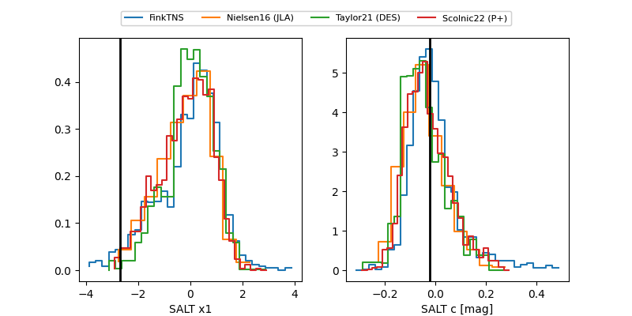

FINK: ZTF25ablndwz
Lasair: ZTF25ablndwz
ALeRCE: ZTF25ablndwz
TNS: 2025vvl
YSE: 2025vvl
ZTF25ablndwz (ztf,fink)
2025vvl (tns,yse)
equatorial (ra, dec) = (31.9143,+2.27813)
galactic (l, b) = (157.9231,-55.32903)

last ztfg=20.11, ztfr=20.12
3 ztfg, 1 ztfr detections